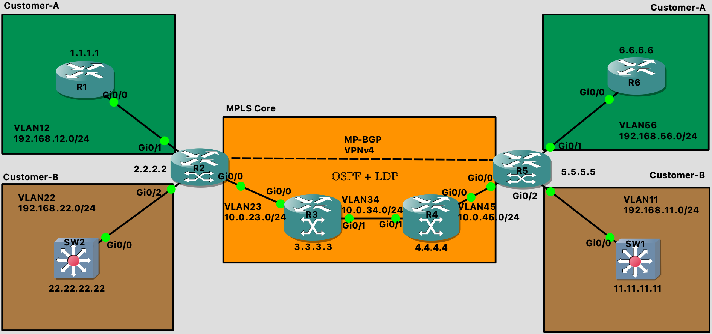

Configuring a Label Switched Network¶
Lab Setup¶
_files/configure-a-label-switched-network.zip
SW1
SW1(config)#int lo1
SW1(config-if)#ip add 11.11.11.11 255.255.255.0
SW1(config-if)#no shut
SW1(config-if)#vlan 11
SW1(config-vlan)#name VLAN11
SW1(config)#int g0/0
SW1(config-if)#no switchport
SW1(config)#int g0/0.11
SW1(config-subif)#encap dot1q 11
SW1(config-subif)#ip add 192.168.11.2 255.255.255.0
SW2
SW2(config)#int lo1
SW2(config-if)#ip add 22.22.22.22 255.255.255.0
SW2(config-if)#no shut
SW2(config-if)#vlan 22
SW2(config-vlan)#name VLAN22
SW2(config-if)#int g0/0
SW2(config-if)#no switchport
SW2(config-if)#int g0/0.22
SW2(config-subif)#encap dot1q 22
SW2(config-subif)#ip add 192.168.22.2 255.255.255.0
R1
R1(config)#int lo1
R1(config-if)#ip add 1.1.1.1 255.255.255.0
R1(config-if)#vlan 12
R1(config-vlan)#name VLAN12
R1(config)#int g0/0
R1(config-if)#no switchport
R1(config-if)#int g0/0.12
R1(config-subif)#encap dot1q 12
R1(config-subif)#ip add 192.168.12.2 255.255.255.0
R2
R2(config)#int lo1
R2(config-if)#ip add 2.2.2.2 255.255.255.0
R2(config-if)#no shut
R2(config-if)#vlan 22
R2(config-vlan)#name VLAN22
R2(config)#vlan 12
R2(config-vlan)#name VLAN12
R2(config-if)#vlan 23
R2(config-vlan)#name VLAN23
R2(config)#int r g0/0 - 2
R2(config-if-range)#no switchport
R2(config-subif)#encap dot1q 23
R2(config-subif)#ip add 10.0.23.1 255.255.255.0
R2(config-subif)#int g0/1.12
R2(config-subif)#encap dot1q 12
R2(config-subif)#ip add 10.0.12.1 255.255.255.0
R2(config-subif)#int g0/2.22
R2(config-subif)#encap dot1q 22
R2(config-subif)#ip add 192.168.22.1 255.255.255.0
R3
R3(config)#int lo1
R3(config-if)#ip add 3.3.3.3 255.255.255.0
R3(config-if)#no shut
R3(config-if)#vlan 23
R3(config-vlan)#name VLAN23
R3(config)#vlan 34
R3(config-vlan)#name VLAN34
R3(config)#int r g0/0 -1
R3(config-if-range)#no switchport
R3(config-if-range)#int g0/0.23
R3(config-subif)#encap dot1q 23
R3(config-subif)#ip add 10.0.23.2 255.255.255.0
R3(config-subif)#int g0/1.34
R3(config-subif)#encap dot1q 34
R3(config-subif)#ip add 10.0.34.1 255.255.255.0
R4
R4(config)#int lo1
R4(config-if)#ip add 4.4.4.4 255.255.255.0
R4(config-if)#no shut
R4(config-if)#vlan 34
R4(config-vlan)#name VLAN34
R4(config-if)#vlan 45
R4(config-vlan)#name VLAN45
R4(config-if)#int r g0/0 -1
R4(config-if-range)#no switchport
R4(config-if-range)#int g0/0.45
R4(config-subif)#encap dot1q 45
R4(config-subif)#ip add 10.0.45.1 255.255.255.0
R4(config-subif)#int g0/1.34
R4(config-subif)#encap dot1q 34
R4(config-subif)#ip add 10.0.34.2 255.255.255.0
R5
R5(config)#int lo1
R5(config-if)#ip add 5.5.5.5 255.255.255.0
R5(config-if)#no shut
R5(config-if)#vlan 45
R5(config-vlan)#name VLAN45
R5(config-if)#vlan 56
R5(config-vlan)#name VLAN56
R5(config-if)#vlan 11
R5(config-vlan)#name VLAN11
R5(config)#int r g0/0 - 2
R5(config-if-range)#no switchport
R5(config)#int g0/0.45
R5(config-subif)#encap dot1q 45
R5(config-subif)#ip add 10.0.45.2 255.255.255.0
R5(config-subif)#int g0/1.56
R5(config-subif)#encap dot1q 56
R5(config-subif)#ip add 192.168.56.1 255.255.255.0
R5(config-subif)#int g0/2.11
R5(config-subif)#encap dot1q 11
R5(config-subif)#ip add 192.168.11.1 255.255.255.0
R6
R6(config)#int lo1
R6(config-if)#ip add 6.6.6.6 255.255.255.0
R6(config-if)#no shut
R6(config-if)#vlan 56
R6(config-vlan)#name VLAN56
R6(config)#int g0/0
R6(config-if)#no switchport
R6(config-if)#int g0/0.56
R6(config-subif)#encap dot1q 56
R6(config-subif)#ip add 192.168.56.2 255.255.255.0
Configuring OSPF¶
R2
R2(config)#int g0/0.23
R2(config-subif)#ip ospf network point-to-point
R2(config-subif)#router ospf 1
R2(config-router)#router-id 2.2.2.2
R2(config-router)#passive-interface default
R2(config-router)#no passive-interface g0/0.23
R2(config-router)#network 2.2.2.2 0.0.0.255 area 0
R2(config-router)#network 10.0.23.0 0.0.0.255 area 0
R3
R3(config)#int g0/0.23
R3(config-subif)#ip ospf network point-to-point
R3(config-subif)#int g0/1.34
R3(config-subif)#ip ospf network point-to-point
R3(config-subif)#router ospf 1
R3(config-router)#router-id 3.3.3.3
R3(config-router)#passive-interface default
R3(config-router)#no passive-interface g0/0.23
R3(config-router)#no passive-interface g0/1.34
R3(config-router)#network 3.3.3.3 0.0.0.255 area 0
R3(config-router)#network 10.0.23.0 0.0.0.255 area 0
R3(config-router)#network 10.0.34.0 0.0.0.255 area 0
R4
R4(config)#int g0/1.34
R4(config-subif)#ip ospf network point-to-point
R4(config)#int g0/0.45
R4(config-subif)#ip ospf network point-to-point
R4(config-subif)#router ospf 1
R4(config-router)#router-id 4.4.4.4
R4(config-router)#passive-interface default
R4(config-router)#no passive-interface g0/1.34
R4(config-router)#no passive-interface g0/0.45
R4(config-router)#network 4.4.4.4 0.0.0.255 area 0
R4(config-router)#network 10.0.34.0 0.0.0.255 area 0
R4(config-router)#network 10.0.45.0 0.0.0.255 area 0
R5
R5(config)#int g0/0.45
R5(config-subif)#ip ospf network point-to-point
R5(config-subif)#router ospf 1
R5(config-router)#router-id 5.5.5.5
R5(config-router)#passive-interface default
R5(config-router)#no passive-interface g0/0.45
R5(config-router)#network 5.5.5.5 0.0.0.255 area 0
R5(config-router)#network 10.0.45.0 0.0.0.255 area 0
Configuring MPLS¶
R2
R2(config)#mpls ip
R2(config)#mpls ldp router-id lo1
R2(config)#mpls label protocol ldp
R2(config)#mpls label range 200 299
R2(config)#int g0/0.23
R2(config-subif)#mpls ip
R2(config-subif)#end
R3
R3(config)#mpls ip
R3(config)#mpls ldp router-id lo1
R3(config)#mpls label protocol ldp
R3(config)#mpls label range 300 399
R3(config)#int g0/0.23
R3(config-subif)#mpls ip
R3(config-subif)#int g0/1.34
R3(config-subif)#mpls ip
R4
R4(config)#mpls ip
R4(config)#mpls ldp router-id lo1
R4(config)#mpls label protocol ldp
R4(config)#mpls label range 400 499
R4(config)#int g0/1.34
R4(config-subif)#mpls ip
R4(config-subif)#int g0/
R4(config-subif)#int g0/0.45
R4(config-subif)#mpls ip
R5
R5(config)#mpls ip
R5(config)#mpls ldp router-id lo1
R5(config)#mpls label protocol ldp
R5(config)#mpls label protocol ldp
R5(config)#mpls label range 500 599
R5(config)#int g0/0.45
R5(config-subif)#mpls ip
Verifying MPLS Forwarding¶
Show the RIB
R4#sh ip route
Codes: L - local, C - connected, S - static, R - RIP, M - mobile, B - BGP
D - EIGRP, EX - EIGRP external, O - OSPF, IA - OSPF inter area
N1 - OSPF NSSA external type 1, N2 - OSPF NSSA external type 2
E1 - OSPF external type 1, E2 - OSPF external type 2
i - IS-IS, su - IS-IS summary, L1 - IS-IS level-1, L2 - IS-IS level-2
ia - IS-IS inter area, * - candidate default, U - per-user static route
o - ODR, P - periodic downloaded static route, H - NHRP, l - LISP
a - application route
+ - replicated route, % - next hop override
Gateway of last resort is not set
2.0.0.0/32 is subnetted, 1 subnets
O 2.2.2.2 [110/3] via 10.0.34.1, 00:33:53, GigabitEthernet0/1.34
3.0.0.0/32 is subnetted, 1 subnets
O 3.3.3.3 [110/2] via 10.0.34.1, 00:33:53, GigabitEthernet0/1.34
4.0.0.0/8 is variably subnetted, 2 subnets, 2 masks
C 4.4.4.0/24 is directly connected, Loopback1
L 4.4.4.4/32 is directly connected, Loopback1
5.0.0.0/32 is subnetted, 1 subnets
O 5.5.5.5 [110/2] via 10.0.45.2, 00:30:31, GigabitEthernet0/0.45
10.0.0.0/8 is variably subnetted, 5 subnets, 2 masks
O 10.0.23.0/24 [110/2] via 10.0.34.1, 00:33:53, GigabitEthernet0/1.34
C 10.0.34.0/24 is directly connected, GigabitEthernet0/1.34
L 10.0.34.2/32 is directly connected, GigabitEthernet0/1.34
C 10.0.45.0/24 is directly connected, GigabitEthernet0/0.45
L 10.0.45.1/32 is directly connected, GigabitEthernet0/0.45
Show the LIB
R2#sh mpls ldp bindings
lib entry: 2.2.2.0/24, rev 2
local binding: label: imp-null
lib entry: 3.3.3.3/32, rev 4
local binding: label: 200
lib entry: 4.4.4.4/32, rev 6
local binding: label: 201
lib entry: 10.0.12.0/24, rev 8
local binding: label: imp-null
lib entry: 10.0.23.0/24, rev 10
local binding: label: imp-null
lib entry: 10.0.34.0/24, rev 12
local binding: label: 202
lib entry: 10.0.45.0/24, rev 14
local binding: label: 203
lib entry: 192.168.12.0/24, rev 16
local binding: label: imp-null
lib entry: 192.168.22.0/24, rev 18
local binding: label: imp-null
Show the FIB
R2#sh ip cef
Prefix Next Hop Interface
0.0.0.0/0 no route
0.0.0.0/8 drop
0.0.0.0/32 receive
2.2.2.0/24 attached Loopback1
2.2.2.0/32 receive Loopback1
2.2.2.2/32 receive Loopback1
2.2.2.255/32 receive Loopback1
3.3.3.3/32 10.0.23.2 GigabitEthernet0/0.23
4.4.4.4/32 10.0.23.2 GigabitEthernet0/0.23
5.5.5.5/32 10.0.23.2 GigabitEthernet0/0.23
10.0.12.0/24 attached GigabitEthernet0/1.12
10.0.12.0/32 receive GigabitEthernet0/1.12
10.0.12.1/32 receive GigabitEthernet0/1.12
10.0.12.255/32 receive GigabitEthernet0/1.12
10.0.23.0/24 attached GigabitEthernet0/0.23
10.0.23.0/32 receive GigabitEthernet0/0.23
10.0.23.1/32 receive GigabitEthernet0/0.23
10.0.23.2/32 attached GigabitEthernet0/0.23
10.0.23.255/32 receive GigabitEthernet0/0.23
10.0.34.0/24 10.0.23.2 GigabitEthernet0/0.23
10.0.45.0/24 10.0.23.2 GigabitEthernet0/0.23
Prefix Next Hop Interface
127.0.0.0/8 drop
192.168.12.0/24 attached GigabitEthernet0/0.12
192.168.12.0/32 receive GigabitEthernet0/0.12
192.168.12.2/32 receive GigabitEthernet0/0.12
192.168.12.255/32 receive GigabitEthernet0/0.12
192.168.22.0/24 attached GigabitEthernet0/2.22
192.168.22.0/32 receive GigabitEthernet0/2.22
192.168.22.1/32 receive GigabitEthernet0/2.22
192.168.22.255/32 receive GigabitEthernet0/2.22
224.0.0.0/4 drop
224.0.0.0/24 receive
240.0.0.0/4 drop
255.255.255.255/32 receive
Show the LFIB
R4#sh mpls forwarding-table
Local Outgoing Prefix Bytes Label Outgoing Next Hop
Label Label or Tunnel Id Switched interface
400 No Label 3.3.3.3/32 0 Gi0/1.34 10.0.34.1
401 300 2.2.2.2/32 0 Gi0/1.34 10.0.34.1
402 Pop Label 10.0.23.0/24 590 Gi0/1.34 10.0.34.1
403 No Label 5.5.5.5/32 0 Gi0/0.45 10.0.45.2
Debug MPLS
R2#ping 5.5.5.5 so lo1 repeat 1
Type escape sequence to abort.
Sending 1, 100-byte ICMP Echos to 5.5.5.5, timeout is 2 seconds:
Packet sent with a source address of 2.2.2.2
!
Success rate is 100 percent (1/1), round-trip min/avg/max = 23/23/23 ms
R3#debug mpls packet
Feb 16 09:04:31.397: MPLS les: Gi0/0.23: rx: Len 122 Stack {303 0 255} - ipv4 data s:2.2.2.2 d:5.5.5.5 ttl:255 tos:0 prot:1
Feb 16 09:04:31.397: MPLS les: Gi0/1.34: tx: Len 122 Stack {403 0 254} - ipv4 data s:2.2.2.2 d:5.5.5.5 ttl:255 tos:0 prot:1
Feb 16 09:04:31.409: MPLS les: Gi0/1.34: rx: Len 122 Stack {300 0 254} - ipv4 data s:5.5.5.5 d:2.2.2.2 ttl:255 tos:0 prot:1
R4#debug mpls packet
Feb 16 09:19:05.258: MPLS les: Gi0/1.34: rx: Len 122 Stack {403 0 254} - ipv4 data s:2.2.2.2 d:5.5.5.5 ttl:255 tos:0 prot:1
Feb 16 09:19:05.261: MPLS les: Gi0/0.45: rx: Len 122 Stack {401 0 255} - ipv4 data s:5.5.5.5 d:2.2.2.2 ttl:255 tos:0 prot:1
Feb 16 09:19:05.261: MPLS les: Gi0/1.34: tx: Len 122 Stack {300 0 254} - ipv4 data s:5.5.5.5 d:2.2.2.2 ttl:255 tos:0 prot:1